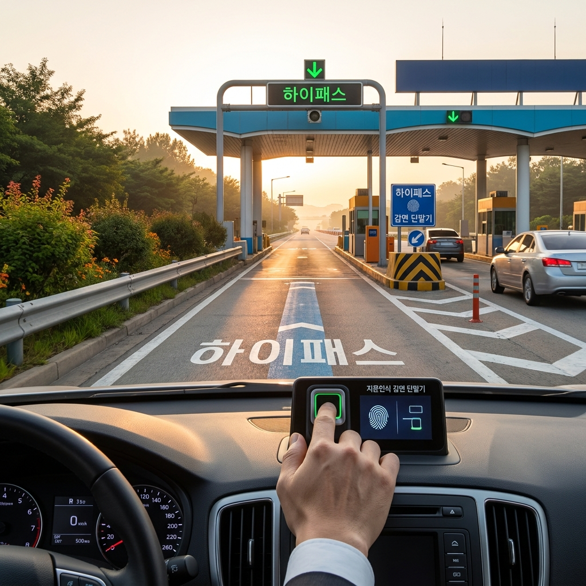
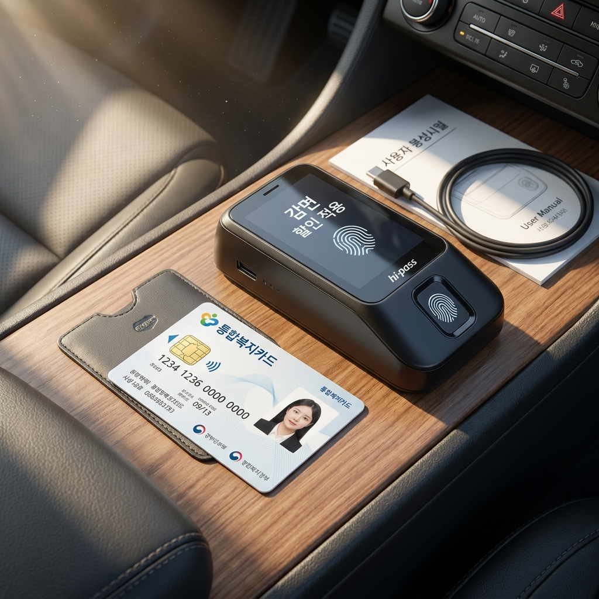

국가유공자·장애인 고속도로 통행료 감면 혜택 — 감면율 비교 계산표와 지문인식 하이패스 단말기 신청 서류 체크리스트
국가유공자와 등록 장애인은 유료도로법 시행령에 따라 한국도로공사가 관리하는 재정고속도로와 대다수 민자고속도로 이용 시 통행료를 전액(100%) 면제받거나 50% 감면받을 수 있습니다. 상이등급 1~5급 국가유공자와 장애 정도가 심한 장애인(기존 1~3급) 중 일부 대상자는 100% 면제 혜택이 주어지며, 그 외 상이등급 6~7급 국가유공자 및 전체 등록 장애인은 50% 감면이 적용됩니다.
고속도로 통행료 감면을 무정차로 편리하게 적용받기 위해서는 지문인식 감면 단말기를 차량에 장착하거나, 지자체 및 고속도로 톨게이트 영업소를 통해 사전 등록된 통합복지카드를 연동해야 합니다. 2026년 현재는 스마트폰 위치정보(GPS)를 활용한 감면 하이패스 서비스도 순차 확대되고 있어 지문 인증의 불편함이 점차 개선되고 있습니다.
대상자별 상이·장애 등급에 따른 감면율 비교표, 감면 대상 차량의 배기량 및 인승 요건, 지문인식 단말기 신청 절차와 구비 서류 체크리스트를 꼼꼼하게 정리해 드립니다.

고속도로 하이패스 감면 차로와 감면 단말기 시스템 안내 / AI 제작 이미지
01 | 국가유공자 및 장애인 고속도로 통행료 감면 제도의 취지와 법적 근거
국가유공자와 등록 장애인에 대한 고속도로 통행료 감면 제도는 유료도로법 제15조 및 동법 시행령 제8조에 근거를 두고 있습니다.
국가를 위해 헌신하고 희생한 독립유공자, 국가유공자, 5·18민주유공자, 보훈보상대상자 등에 대한 국가적 예우와, 이동에 제약이 있는 장애인의 이동권 보장 및 경제적 부담 경감을 목적으로 운영되고 있습니다.
감면 혜택은 한국도로공사가 운영하는 전국 모든 재정고속도로에 기본 적용되며, 대부분의 민간투자고속도로(민자고속도로)와 지자체 유료도로에서도 동일하거나 유사한 감면 규정을 준용하고 있습니다.
단, 이 제도는 감면 대상자 본인이 직접 운전하거나 본인이 해당 차량에 동승하여 이동할 때에만 합법적으로 인정되며, 타인에게 대여하거나 비동승 시 사용하는 것은 엄격히 금지됩니다.
02 | 대상자별 상이·장애 등급에 따른 감면율(100% 면제 vs 50% 감면) 비교표
감면율은 유공자의 상이등급 및 장애인의 장애 정도에 따라 100% 전액 면제와 50% 반액 감면으로 구분됩니다.
| 대상 구분 |
세부 자격 및 상이·장애 등급 |
통행료 감면율 |
소관 부처 |
| 독립유공자 |
애국지사 본인 및 유족 (선순위자 1인) |
100% 전액 면제 |
국가보훈부 |
| 국가유공자 (상이 1~5급) |
전상군경, 공상군경, 4·19혁명부상자 등 상이 1~5급 |
100% 전액 면제 |
국가보훈부 |
| 5·18민주화운동부상자 |
장해등급 1~5급 판정자 |
100% 전액 면제 |
국가보훈부 |
| 국가유공자 (상이 6~7급) |
상이 6급, 7급 판정 국가유공자 본인 |
50% 감면 |
국가보훈부 |
| 보훈보상대상자 |
재해부상군경 등 상이 1~7급 본인 |
50% 감면 |
국가보훈부 |
| 등록 장애인 (전체) |
장애 정도가 심한 장애인(중증) 및 심하지 않은 장애인(경증) |
50% 감면 |
보건복지부 |
| 고엽제후유의증 환자 |
고도·중등도·경도 장애 등급 판정자 |
50% 감면 |
국가보훈부 |
상이 등급이 없는 일반 국가유공자(무공수훈자, 참전유공자 등)는 고속도로 통행료 감면 대상에 해당하지 않으므로 유의하셔야 합니다.
03 | 감면 혜택 적용이 가능한 차량 기준과 공동명의 인정 요건
통행료 감면은 대상자 본인이 소유한 모든 차량에 적용되는 것이 아니라, 법에서 정한 1가구 1대(대상자당 1대)의 등록 차량에만 국한됩니다.
감면 대상 차량의 규격 기준은 다음과 같습니다.
1. 승용자동차: 배기량 2,000cc 이하 일반 승용차, 7인승 이상 10인승 이하 일반 승용차(배기량 무관), 친환경차(전기차·수소차 등 승용차)
2. 승합자동차: 승차정원 12인승 이하 승합자동차
3. 화물자동차: 최대적재량 1톤 이하 화물자동차
차량의 명의는 감면 대상자 본인 명의이거나, 대상자와 주민등록표상 함께 거재하는 세대원(배우자, 직계존비속, 직계비속의 배우자, 형제자매)과의 공동명의로 등록되어 있어야 합니다. 법인 명의 차량이나 렌터카, 리스 차량(장기렌트 포함)은 원칙적으로 감면 대상에서 제외됩니다.
04 | 유료도로 통행료 감면카드(통합복지카드) 발급 대상과 신청 방법
감면 혜택을 증명하고 적용받기 위한 핵심 매체는 '통행료 감면기능이 탑재된 복지카드'입니다.
장애인은 주소지 읍·면·동 행정복지센터에서 '장애인 통합복지카드(통행료 감면용)'를 신청하여 발급받을 수 있으며, 신용카드, 체크카드, 단순 신분증형 카드 중 선택할 수 있습니다.
국가유공자는 관할 보훈지청을 통해 '국가유공자 통합복지카드'를 신청해야 합니다.
복지카드 전면 또는 후면에는 통행료 감면 대상 차량 번호가 정확히 인쇄되어 발급되며, 고속도로 일반 요금소(TCS)를 이용할 때는 요금 수납원에게 통행권과 함께 이 카드를 제시하고 본인 확인을 거쳐 즉시 감면받을 수 있습니다.

차량에 설치되는 지문인식 하이패스 감면 단말기 구성품 / AI 제작 이미지
05 | 지문인식 하이패스 단말기 vs 일반 단말기 등록 절차 및 차이점
정차 없이 하이패스 차로를 통과하며 감면을 받으려면 반드시 한국도로공사에 등록된 지문인식 감면 단말기를 장착해야 합니다.
일반 하이패스 단말기에 감면 복지카드를 삽입하더라도 지문 인증 절차가 없으면 일반 통행료가 그대로 전액 청구됩니다.
지문인식 단말기는 본체와 별도의 지문 스캐너(인식기)로 구성되어 있습니다. 지문 등록은 단말기 구입 후 관할 읍·면·동 행정복지센터 또는 보훈지청, 한국도로공사 각 톨게이트 영업소를 방문하여 대상자의 지문 정보를 단말기 내부 모듈에 암호화하여 등록해야 합니다.
최근에는 지문 인증의 번거로움을 줄이기 위해 스마트폰의 '고속도로 통행료' 앱과 차량용 일반 단말기를 블루투스로 연동하여 본인 인증 및 탑승 여부를 확인하는 위치기반 감면 서비스도 도입되고 있습니다.
06 | 요금소 통과 시 올바른 이용 방법과 탑승 확인 수칙
지문인식 하이패스 단말기를 설치한 차량으로 고속도로를 이용할 때는 다음 수칙을 반드시 준수해야 정상적인 감면이 처리됩니다.
1. 출발 전 지문 인증: 시동을 켠 후 단말기에 감면 하이패스 카드를 삽입하고 지문 스캐너에 대상자의 손가락을 접촉하여 본인 인증을 완료합니다. 인증 성공 시 음성으로 "감면 인증되었습니다"라는 안내가 나옵니다.
2. 인증 유효시간 확인: 지문 인증의 유효시간은 통상 4시간입니다. 4시간이 경과하기 전에 휴게소에 들르거나 장거리 주행 중에는 재인증을 해야 합니다.
3. 시동 차단 시 재인증: 주행 중 휴게소나 주유소에서 시동을 껐다가 다시 켜면 지문 인증이 해제되므로, 출발 전 반드시 지문 재인증을 수행해야 합니다.
4. 본인 동승 필수: 하이패스 차로 통과 시 고성능 적외선 카메라와 단속 장비로 탑승 여부가 확인될 수 있으며, 대상자가 동승하지 않은 상태에서 부정 사용 시 감면액의 10배에 달하는 부가통행료가 징수되고 카드 사용이 정지될 수 있습니다.
07 | 고속도로 통행료 감면 단말기 신규 신청 시 필수 준비 서류 체크리스트
감면 단말기를 처음 구입하고 차량 및 지문을 등록할 때 필요한 구비 서류 목록입니다.
📋 지문인식 감면 단말기 등록 필수 서류 체크리스트
1. 신분증: 주민등록증, 운전면허증 등 대상자 본인 신분증
2. 감면 복지카드: 장애인 통합복지카드 또는 국가유공자증(통합복지카드)
3. 자동차등록증: 감면 대상 차량으로 등록할 자동차등록증 원본
4. 주민등록등본: 공동명의 차량인 경우 세대원 거주 확인을 위해 필수 (3개월 이내 발급본)
5. 구입한 감면 단말기: 지문 모듈이 포함된 지문인식 하이패스 단말기 기기 본체
대리인이 등록을 신청하는 경우 대상자의 위임장과 인감증명서, 대리인의 신분증이 추가로 필요합니다.
08 | 지문 인증 실패나 카드 미소지 등 현장 돌발 상황 대처 가이드
지문 센서 오류나 노령·건조함으로 인해 지문 인증이 되지 않거나 복지카드를 깜빡하고 지참하지 않았을 때 대처 요령입니다.
지문 인증이 반복해서 실패하는 경우 하이패스 차로로 바로 통과하면 정상 감면이 불가하므로, 일반 수납 차로(TCS)로 진입하여 통행권을 뽑고 출구 수납원에게 장애인등록증 또는 유공자증을 직접 제시하여 수동 감면을 받아야 합니다.
만약 하이패스 차로를 통과하여 일반 요금이 청구되었거나 미납 고지서가 발송된 경우, 통행일로부터 30일 이내에 한국도로공사 영업소를 방문하여 당시 대상자 탑승 사실을 소명(당일 병원 진료 영수증, 복지카드 등 제출)하면 소급하여 감면 요금으로 정산받을 수 있습니다.
손가락 지문이 마모되어 인식이 아예 불가능한 대상자의 경우, 안과 진단서나 의사 소견서를 첨부하여 도로공사 영업소에서 '지문 인증 예외' 신청을 하시면 대체 인증 절차를 안내받을 수 있습니다.
09 | 통행료 감면 신청 전 반드시 점검해야 할 핵심 4단계 절차표
놓치기 쉬운 감면 혜택을 완벽하게 누리기 위한 단계별 신청 절차를 요약합니다.
🚀 고속도로 통행료 감면 완벽 등록 4단계 절차표
· 1단계 : 자격 확인 및 카드 발급 — 관할 주민센터나 보훈지청에서 통행료 감면 기능이 있는 통합복지카드 신규/재발급
· 2단계 : 감면 단말기 구매 — 온라인 쇼핑몰이나 제조사를 통해 조달청 인증 지문인식 하이패스 감면 단말기 구입
· 3단계 : 차량 및 지문 등록 — 주민센터, 보훈지청 또는 도로공사 영업소를 방문하여 단말기에 차량 정보 입력 및 지문 등록
· 4단계 : 차량 장착 및 테스트 — 차량 전면 유리 중앙 하단에 단말기 부착 후 시동을 켜고 지문 인증 정상 작동 여부 확인
💡 최종 점검 체크리스트
1. 신차 구매나 차량 변경 시 기존 단말기의 차종 변경 등록을 반드시 새로 진행해야 합니다.
2. 이사를 하여 세대가 분리되면 공동명의 감면 자격이 상실될 수 있으므로 주소지 변경 시 재확인하세요.
3. 감면 복지카드의 유효기간 만료 전 갱신 신청을 완료하여 혜택 단절을 방지하세요.
#고속도로통행료감면
#장애인통행료할인
#국가유공자통행료면제
#하이패스감면단말기
#지문인식단말기등록
#통합복지카드
#하이패스장애인할인
#유료도로통행료면제
#한국도로공사감면
#고속도로할인제도